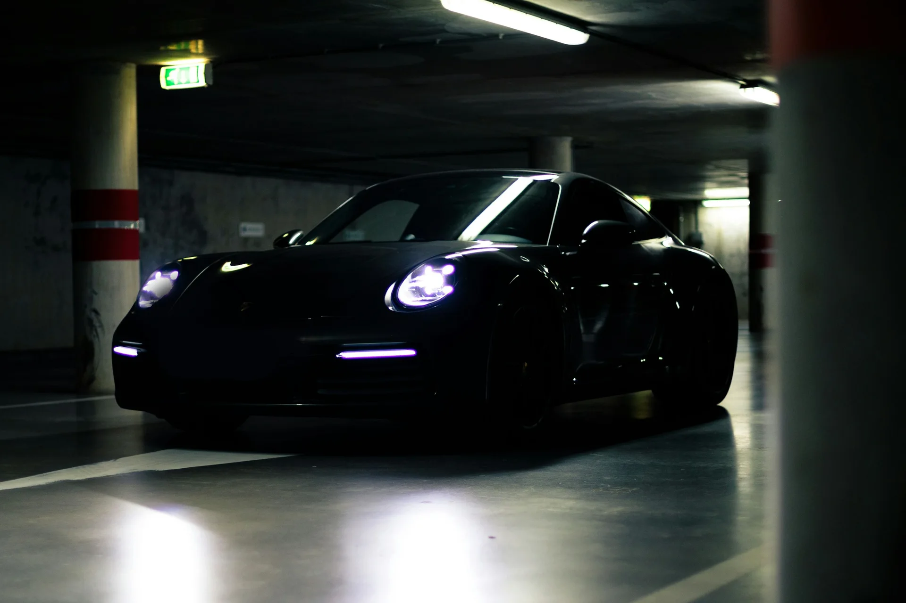
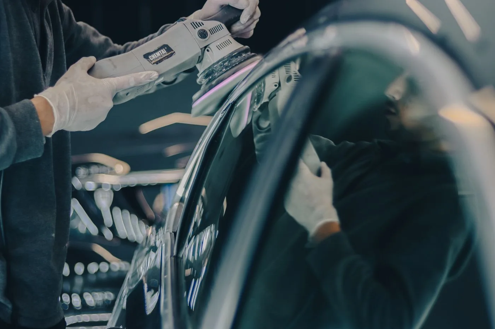

КУЗОВНАЯ СТУДИЯ / КАЛИНИНГРАД
BODY & PAINT STUDIOКУЗОВНОЙ РЕМОНТБЕЗ КОМПРОМИССОВ.
Возвращаем форму.
Восстанавливаем цвет.
Сохраняем характер.
ФОРМА. ЦВЕТ. ДЕТАЛИ.
Всё должно быть точно.
Кузовной
ремонт
Покраска
автомобиля
Полировка
кузова
Восстановление
после ДТП
ТОЧНОСТЬ В
КАЖДОЙ УСЛУГЕ.
От локального ремонта
до полного восстановления кузова.
Находим решение для вашего автомобиля.

Идеальный результат
начинается с точности.
01Покраска автомобиля
Локальная или полная покраска. Подбор оттенка, подготовка поверхности и финишное покрытие — с вниманием к каждому переходу.
02Кузовной ремонт
Восстановление формы и геометрии кузовных элементов. Сначала осмотр повреждений, затем согласование объёма работ.
03Удаление вмятин
Оценим глубину повреждения, состояние покрытия и доступ к детали. Способ исправления вмятины выбираем после осмотра.
04Полировка кузова
Работа с поверхностными дефектами и следами эксплуатации. Подбираем обработку с учётом состояния лакокрасочного покрытия.
05Замена кузовных элементов
Замена повреждённых деталей с проверкой посадки, сопряжений и зазоров. Необходимость замены определяем при осмотре.
06Восстановление после ДТП
От оценки кузовных повреждений до восстановления и окраски. Последовательность и объём ремонта обсуждаем индивидуально.
07Полировка стёкол
Оценка состояния стекла и возможности обработки. Глубина царапин и тип повреждений определяют допустимый способ работы.
08Работа с отдельными деталями
Ремонт и окраска отдельных кузовных элементов. Условия приёма снятых деталей согласовываются заранее.
МЕНЬШЕ СЛОВ.
БОЛЬШЕ ДЕЛА.
Наши работы —
лучший способ познакомиться.
Демонстрационная галерея. Стоковые кадры,
не реальные работы YMV.
ДО / ПОСЛЕ
Один автомобиль.
Совсем другое впечатление.
Демонстрация ползунка: один кадр с разной обработкой. Реальные фотографии до и после будут добавлены отдельно.
ПОЧЕМУ
YMV.
Мы видим больше,
чем повреждение.
Мы видим автомобиль
таким, каким он должен быть.
Начинаем с осмотра
Бесплатный первичный осмотр. Обсуждаем состояние автомобиля и необходимый объём работ.
Восстанавливаем форму
Кузовной ремонт с вниманием к геометрии, зазорам и сопряжению деталей.
Ищем точный оттенок
Подбор цвета — часть работы над покрытием, которое выглядит цельно.
Доводим до финиша
Полировка и внимание к поверхности. Детали формируют общее впечатление.
Смотрим на задачу целиком
Работаем с повреждениями разной сложности — от отдельной детали до восстановления кузова.
ОТ ПЕРВОГО ВЗГЛЯДА
ДО ПОСЛЕДНЕГО ШТРИХА.
- 01
ОСМОТР
Знакомимся с автомобилем
и вашей задачей. - 02
ОЦЕНКА
Согласовываем объём,
стоимость и сроки. - 03
РЕМОНТ
Восстанавливаем форму
и готовим поверхность. - 04
ПОКРАСКА
Подбираем цвет,
наносим покрытие. - 05
ВЫДАЧА
Проверяем детали.
Вы принимаете результат.
Последовательность зависит от задачи. Все работы согласовываем до начала ремонта.
СЛЕДУЮЩИЙ ШАГ — ЗА ВАМИ
НУЖЕН
РЕМОНТ?
Покажите автомобиль —
мы оценим состояние и объём работ.
ПРИЕЗЖАЙТЕ
НА ОСМОТР.
Хороший результат
начинается со знакомства.
YMV PAINTING LAB
Калининград, Центральный район
Точный адрес уточняется
Контакты пока не указаны
Калининград / Центральный район